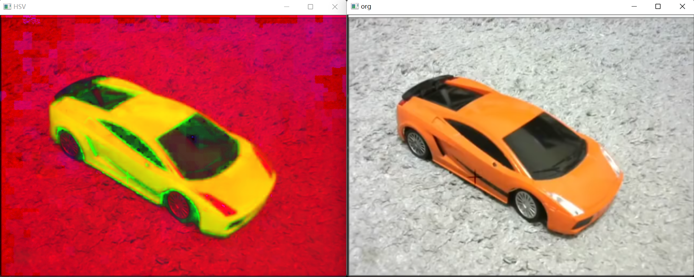
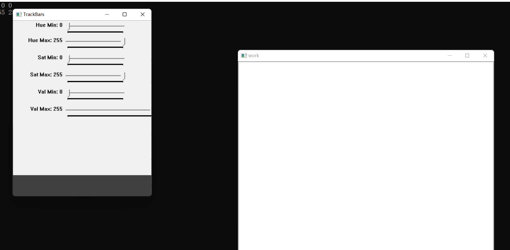
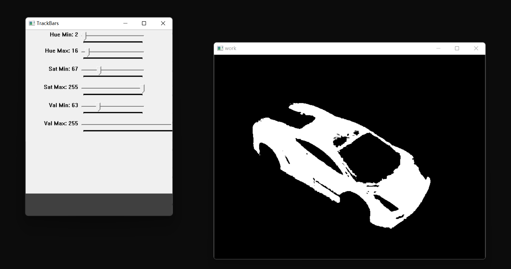

Opencv in Visual Studio C(3)
Opencv with Visual Studio3

看到这个图片了嘛，这个就是我们今天的任务！通过颜色来检测于识别小车！
颜色检测
我们首先来转化一下这个图片，我们的图片都是采用BGR绘制的。但是还有另一套颜色系统，是用HSV来描述的：
每一种颜色都是由色相（Hue，简H），饱和度（Saturation，简S）和色明度（Value，简V）所表示的。这个模型中颜色的参数分别是：色调（H），饱和度（S），亮度（V）。
色调H参数表示色彩信息，即所处的光谱颜色的位置。该参数用一角度量来表示，取值范围为0°～360°。若从红色开始按逆时针方向计算，红色为0°，绿色为120°，蓝色为240°。它们的补色是：黄色为60°，青色为180°，紫色为300°；
饱和度S：取值范围为0.0～1.0；
亮度V：取值范围为0.0(黑色)～1.0(白色)。 在Opencv中，转化的方式同将图片二值化是一致的，都是cvtColor(),其调用的参数我想很容易猜：COLOR_BGR2HSV.

但是，我们若是想要筛选，就必须要采用滑条的方式来搞！
怎么搞呢？
首先，我们创建滑动条，就必须要使用Scalar来搞，我们的HSV有上下限制，这就意味着。两个vector是被需要的：
vector<int> lower;
vector<int> upper;int arr[6] = { 0,0,0,255,255,255 };
for (int i = 0; i < 3; i++) {
lower.push_back(arr[i]);
upper.push_back(arr[i + 3]);
} 随后，使用由inRange函数
CV_EXPORTS_W void inRange(InputArray src, InputArray lowerb,
InputArray upperb, OutputArray dst);
/** @brief Performs the per-element comparison of two arrays or an array and scalar value.
The function compares:
* Elements of two arrays when src1 and src2 have the same size:
\f[\texttt{dst} (I) = \texttt{src1} (I) \,\texttt{cmpop}\, \texttt{src2} (I)\f]
* Elements of src1 with a scalar src2 when src2 is constructed from
Scalar or has a single element:
\f[\texttt{dst} (I) = \texttt{src1}(I) \,\texttt{cmpop}\, \texttt{src2}\f]
* src1 with elements of src2 when src1 is constructed from Scalar or
has a single element:
\f[\texttt{dst} (I) = \texttt{src1} \,\texttt{cmpop}\, \texttt{src2} (I)\f]
When the comparison result is true, the corresponding element of output
array is set to 255. The comparison operations can be replaced with the
equivalent matrix expressions:
@code{.cpp}
Mat dst1 = src1 >= src2;
Mat dst2 = src1 < 8;
... 产生掩码：但是这里要求的时Scalar，我们先搞一下
Scalar down(lower[0], lower[1], lower[2]);
Scalar up(upper[0], upper[1], upper[2]); 现在可以了
inRange(HSV, down, up, mask); 但是，反复的调值太麻烦，我们使用滑动条调值！
先建立一个窗口，在基于这个窗口创立滑动条！
namedWindow("TrackBars", (640, 480));
createTrackbar("Hue Min", "TrackBars", &lower[0], 255);
createTrackbar("Hue Max", "TrackBars", &upper[0], 255);
createTrackbar("Sat Min", "TrackBars", &lower[1], 255); createTrackbar("Sat Max", "TrackBars", &upper[1], 255);
createTrackbar("Val Min", "TrackBars", &lower[2], 255);
createTrackbar("Val Max", "TrackBars", &upper[2], 255);CV_EXPORTS_W void namedWindow(const String& winname, int flags = WINDOW_AUTOSIZE);
/** @brief Destroys the specified window.
The function destroyWindow destroys the window with the given name.
@param winname Name of the window to be destroyed.
*/CV_EXPORTS int createTrackbar(const String& trackbarname, const String& winname,
int* value, int count,
TrackbarCallback onChange = 0,
void* userdata = 0);
/** @brief Returns the trackbar position.
The function returns the current position of the specified trackbar.
@note
[__Qt Backend Only__] winname can be empty if the trackbar is attached to the control
panel.
@param trackbarname Name of the trackbar.
@param winname Name of the window that is the parent of the trackbar.
*/ 现在，使用一个死循环来完成我们的工作：
while(1)
{
Scalar down(lower[0], lower[1], lower[2]);
Scalar up(upper[0], upper[1], upper[2]);
inRange(HSV, down, up, mask);
imshow("work", mask);
waitKey(1);
}
这样就好了。
#include<opencv2/opencv.hpp>
#include<iostream>
#include<string>
#include<cmath>
#include<vector>
using namespace std;
using namespace cv;
string path = "D:\\My coding repositary\\learnopencv\\5\\source_file\\1.png";
vector<int> lower;
vector<int> upper;
void showVec(vector<int> pVec) {
for (auto i = pVec.begin(); i != pVec.end(); i++) {
cout << *i << " ";
}
cout << '\n';
}
Mat HSV , mask;
int main()
{
int arr[6] = { 0,0,0,255,255,255 };
for (int i = 0; i < 3; i++) {
lower.push_back(arr[i]);
upper.push_back(arr[i + 3]);
}
showVec(lower);
showVec(upper);
Mat workPng = imread(path);
if (workPng.empty()) {
return -1;
}
cvtColor(workPng, HSV, COLOR_BGR2HSV);
namedWindow("TrackBars", (640, 480));
createTrackbar("Hue Min", "TrackBars", &lower[0], 255);
createTrackbar("Hue Max", "TrackBars", &upper[0], 255);
createTrackbar("Sat Min", "TrackBars", &lower[1], 255);
createTrackbar("Sat Max", "TrackBars", &upper[1], 255);
createTrackbar("Val Min", "TrackBars", &lower[2], 255);
createTrackbar("Val Max", "TrackBars", &upper[2], 255);
while(1)
{
Scalar down(lower[0], lower[1], lower[2]);
Scalar up(upper[0], upper[1], upper[2]);
inRange(HSV, down, up, mask);
imshow("work", mask);
waitKey(1);
}
waitKey();
}

全体目光向我看齐，我宣布个事！是我Charliechen写的这篇文章！(?)